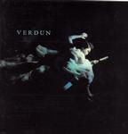

| Artist: | Verdun |
| Title: | Verdun |
| Label: | RCI 829757-81682-1 |
| Length(s): | 38 minutes |
| Year(s) of release: | 2004 |
| Month of review: | [01/2005] |
| 1) | Dream Of The Black Horse | 5:55 |
| 2) | Page Of Swords | 3.27 |
| 3) | Purple Haze | 4.54 |
| 4) | Stand By Your Man | 4.15 |
| 5) | Song To A Sparrow | 2.53 |
| 6) | April | 3.20 |
| 7) | Nightfall | 3.18 |
| 8) | Forty-seven | 2.57 |
| 9) | Fate | 6.34 |
Page Of Swords has a strong lingering bass and the sax brings in a jazzy feel. Apart from that the atmosphere is still very laid back and mesmerizing. The vocals have now attained meaning, and the semblance of Roebuck's vocals is now more to The Gathering's Anneke van Griensven.
Purple Haze (yes, the Jimi Purple Haze) is played at a lower speed and with a lot more drum rolls. This track has obtained quite a different feeling. And on this rendition it's clear that it is the sky being kissed, not this guy. But it can't even begin to suggest the difference rendered on Stand By Your Man. This almost has something of a slow White Stripes feeling instrumentally with Lee Clayton's voice over them, thus changing the perspective of the song. If it weren't for the lyrics, you wouldn't recognize this one. Where I severely dislike the original song this version is mesmerizing.
Song To A Sparrow is cello with Roebuck's high vocals. Quite fragile. April is very rhythmic and choppy yet oriental mainly because of Hoang's vocals, which continue into Nightfall. The lingering bass we've had before returns, the drums are to the fore quite a bit. The piano is used to create dissonants, while the guitar pushes the melody forth. Nice track.
Closer Fate has Roebuck's high vocals over a military drum roll and high keys. The throbbing bass in the back and oriental strings during the instrumental session.